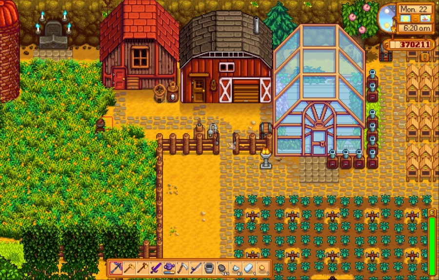
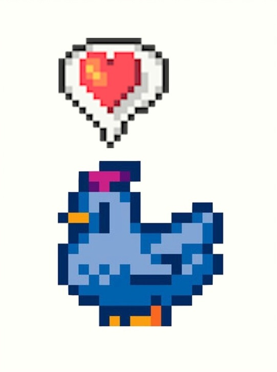
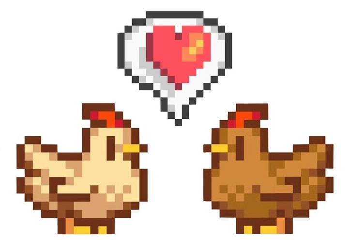
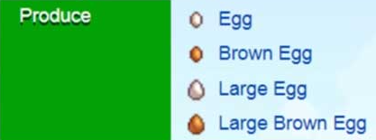
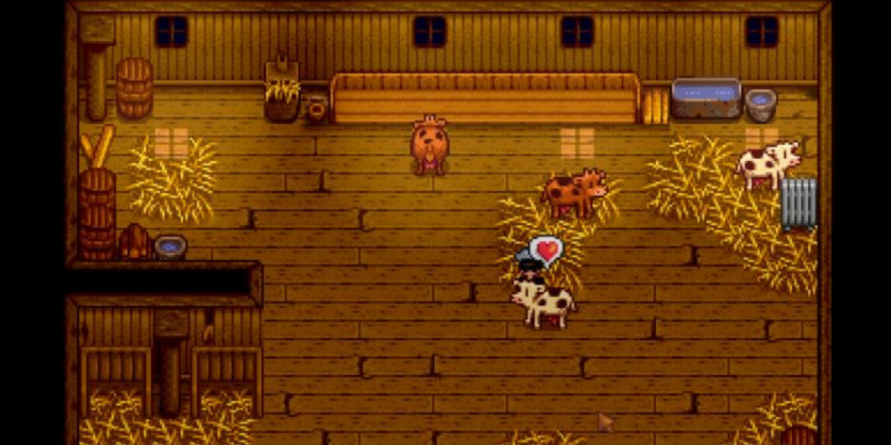
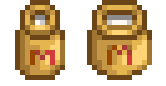
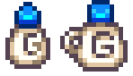

𝑻𝒉𝒆 𝑨𝒏𝒊𝒎𝒂𝒍𝒔 𝒐𝒇 𝑺𝒕𝒂𝒓𝒅𝒆𝒘 𝑽𝒂𝒍𝒍𝒆𝒚

𝚁𝚊𝚒𝚜𝚒𝚗𝚐 𝚊𝚗𝚒𝚖𝚊𝚕𝚜 𝚒𝚜 𝚓𝚞𝚜𝚝 𝚘𝚗𝚎 𝚘𝚏 𝚝𝚑𝚎 𝚟𝚊𝚛𝚒𝚘𝚞𝚜 𝚏𝚊𝚛𝚖𝚒𝚗𝚐 𝚊𝚌𝚝𝚒𝚟𝚒𝚝𝚒𝚎𝚜 𝚙𝚘𝚜𝚜𝚒𝚋𝚕𝚎 𝚒𝚗
𝚝𝚑𝚎 𝚐𝚊𝚖𝚎. 𝙾𝚗 𝚝𝚑𝚒𝚜 𝚙𝚊𝚐𝚎, 𝚢𝚘𝚞 𝚠𝚒𝚕𝚕 𝚏𝚒𝚗𝚍 𝚊𝚕𝚕 𝚜𝚘𝚛𝚝𝚜 𝚘𝚏 𝚒𝚗𝚏𝚘𝚛𝚖𝚊𝚝𝚒𝚘𝚗 𝚊𝚋𝚘𝚞𝚝 𝚜𝚘𝚖𝚎 𝚘𝚏
𝚝𝚑𝚎 𝚊𝚗𝚒𝚖𝚊𝚕𝚜 𝚒𝚗 𝚝𝚑𝚎 𝚐𝚊𝚖𝚎, 𝚒𝚗𝚌𝚕𝚞𝚍𝚒𝚗𝚐 𝚝𝚑𝚎𝚒𝚛 𝚙𝚞𝚛𝚌𝚑𝚊𝚜𝚎 𝚙𝚛𝚒𝚌𝚎, 𝚙𝚞𝚛𝚌𝚑𝚊𝚜𝚎
𝚛𝚎𝚚𝚞𝚒𝚛𝚎𝚖𝚎𝚗𝚝𝚜, 𝚝𝚑𝚎𝚒𝚛 𝚙𝚛𝚘𝚍𝚞𝚌𝚝𝚜 𝚊𝚗𝚍 𝚝𝚑𝚎 𝚏𝚛𝚎𝚚𝚞𝚎𝚗𝚌𝚢 𝚘𝚏 𝚠𝚑𝚒𝚌𝚑 𝚝𝚑𝚎𝚢 𝚙𝚛𝚘𝚍𝚞𝚌𝚎 𝚝𝚑𝚎𝚜𝚎
𝚙𝚛𝚘𝚍𝚞𝚌𝚝𝚜.
Chickens
 𝚃𝚑𝚎𝚛𝚎 𝚊𝚛𝚎 𝚝𝚑𝚛𝚎𝚎 𝚍𝚒𝚏𝚏𝚎𝚛𝚎𝚗𝚝 𝚔𝚒𝚗𝚍𝚜 𝚘𝚏 𝚗𝚘𝚛𝚖𝚊𝚕 𝚌𝚑𝚒𝚌𝚔𝚎𝚗𝚜 𝚒𝚗 𝚝𝚑𝚎 𝚐𝚊𝚖𝚎: 𝚋𝚛𝚘𝚠𝚗, 𝚠𝚑𝚒𝚝𝚎 𝚊𝚗𝚍 𝚋𝚕𝚞𝚎 𝚌𝚑𝚒𝚌𝚔𝚎𝚗𝚜. 𝚃𝚑𝚎𝚛𝚎 𝚒𝚜 𝚗𝚘 𝚎𝚌𝚘𝚗𝚘𝚖𝚒𝚌 𝚘𝚛 𝚙𝚛𝚒𝚌𝚎 𝚍𝚒𝚏𝚏𝚎𝚛𝚎𝚗𝚌𝚎 𝚋𝚎𝚝𝚠𝚎𝚎𝚗 𝚝𝚑𝚎𝚜𝚎 𝚌𝚑𝚒𝚌𝚔𝚎𝚗𝚜; 𝚒𝚝 𝚒𝚜 𝚜𝚘𝚕𝚎𝚕𝚢 𝚊 𝚜𝚙𝚛𝚒𝚝𝚎 𝚍𝚒𝚏𝚏𝚎𝚛𝚎𝚗𝚌𝚎. 𝙶𝚊𝚣𝚎 𝚞𝚙𝚘𝚗 𝚝𝚑𝚎𝚜𝚎 𝚋𝚎𝚊𝚞𝚝𝚒𝚏𝚞𝚕 𝚌𝚑𝚒𝚌𝚔𝚎𝚗𝚜 𝚊𝚗𝚍 𝚕𝚎𝚝 𝚢𝚘𝚞𝚛 𝚑𝚎𝚊𝚛𝚝 𝚛𝚎𝚓𝚘𝚒𝚌𝚎 𝚒𝚗 𝚝𝚑𝚎𝚒𝚛 𝚜𝚙𝚕𝚎𝚗𝚍𝚘𝚛.
𝚄𝚜𝚎 𝚝𝚑𝚎 𝚜𝚕𝚒𝚍𝚎𝚛 𝚊𝚋𝚘𝚟𝚎 𝚝𝚘 𝚒𝚗𝚍𝚒𝚌𝚊𝚝𝚎 𝚑𝚘𝚠 𝚖𝚞𝚌𝚑 𝚢𝚘𝚞 𝚕𝚒𝚔𝚎 𝚝𝚑𝚎 𝚌𝚑𝚒𝚌𝚔𝚎𝚗𝚜.
Purchasing

𝙲𝚑𝚒𝚌𝚔𝚎𝚗𝚜 𝚌𝚊𝚗 𝚋𝚎 𝚙𝚞𝚛𝚌𝚑𝚊𝚜𝚎𝚍 𝚏𝚘𝚛 𝟾00𝚐 𝚎𝚊𝚌𝚑 𝚏𝚛𝚘𝚖 𝙼𝚊𝚛𝚗𝚒𝚎'𝚜 𝚛𝚊𝚗𝚌𝚑. 𝚃𝚘 𝚙𝚞𝚛𝚌𝚑𝚊𝚜𝚎 𝚝𝚑𝚎 𝚠𝚑𝚒𝚝𝚎 𝚊𝚗𝚍 𝚋𝚛𝚘𝚠𝚗 𝚌𝚑𝚒𝚌𝚔𝚎𝚗𝚜, 𝚢𝚘𝚞 𝚖𝚞𝚜𝚝 𝚑𝚊𝚟𝚎 𝚙𝚞𝚛𝚌𝚑𝚊𝚜𝚎𝚍 𝚊 𝙲𝚘𝚘𝚙 𝚊𝚗𝚍 𝚑𝚊𝚍 𝚒𝚝 𝚌𝚘𝚗𝚜𝚝𝚛𝚞𝚌𝚝𝚎𝚍 𝚋𝚢 𝚁𝚘𝚋𝚒𝚗. 𝙵𝚘𝚛 𝚝𝚑𝚎 𝚋𝚕𝚞𝚎 𝚌𝚑𝚒𝚌𝚔𝚎𝚗𝚜, 𝚢𝚘𝚞 𝚖𝚞𝚜𝚝 𝚑𝚊𝚟𝚎 𝚠𝚒𝚝𝚗𝚎𝚜𝚜𝚎𝚍 𝚂𝚑𝚊𝚗𝚎'𝚜 𝟾 𝚑𝚎𝚊𝚛𝚝 𝚎𝚟𝚎𝚗𝚝 𝚠𝚑𝚒𝚌𝚑 𝚝𝚊𝚔𝚎𝚜 𝚙𝚕𝚊𝚌𝚎 𝚊𝚝 𝙼𝚊𝚛𝚗𝚒𝚎'𝚜 𝚛𝚊𝚗𝚌𝚑.
Products

𝙲𝚑𝚒𝚌𝚔𝚎𝚗𝚜 𝚙𝚛𝚘𝚍𝚞𝚌𝚎 𝚎𝚐𝚐𝚜 𝚎𝚟𝚎𝚛𝚢 𝚍𝚊𝚢 𝚒𝚏 𝚝𝚑𝚎𝚢 𝚊𝚛𝚎 𝚠𝚎𝚕𝚕 𝚌𝚊𝚛𝚎𝚍 𝚏𝚘𝚛 (𝚏𝚎𝚍 𝚊𝚗𝚍 𝚐𝚒𝚟𝚎𝚗 𝚕𝚘𝚟𝚎 𝚎𝚟𝚎𝚛𝚢 𝚍𝚊𝚢). 𝙲𝚑𝚒𝚌𝚔𝚎𝚗𝚜 𝚠𝚒𝚕𝚕 𝚙𝚛𝚘𝚍𝚞𝚌𝚎 𝚕𝚊𝚛𝚐𝚎 𝚎𝚐𝚐𝚜 𝚒𝚏 𝚢𝚘𝚞 𝚑𝚊𝚟𝚎 𝚊 𝚑𝚒𝚐𝚑 𝚏𝚛𝚒𝚎𝚗𝚍𝚜𝚑𝚒𝚙 𝚛𝚊𝚝𝚒𝚗𝚐 𝚠𝚒𝚝𝚑 𝚝𝚑𝚎𝚖.
Cows

𝙼𝚞𝚌𝚑 𝚕𝚒𝚔𝚎 𝚌𝚑𝚒𝚌𝚔𝚎𝚗𝚜, 𝚝𝚑𝚎𝚛𝚎 𝚊𝚛𝚎 𝚊𝚕𝚜𝚘 𝚝𝚠𝚘 𝚍𝚒𝚏𝚏𝚎𝚛𝚎𝚗𝚝 𝚔𝚒𝚗𝚍𝚜 𝚘𝚏 𝚌𝚘𝚠𝚜; 𝚠𝚑𝚒𝚝𝚎 𝚊𝚗𝚍 𝚋𝚛𝚘𝚠𝚗 𝚌𝚘𝚠𝚜. 𝙰𝚕𝚜𝚘 𝚕𝚒𝚔𝚎 𝚌𝚑𝚒𝚌𝚔𝚎𝚗𝚜, 𝚝𝚑𝚎𝚛𝚎 𝚒𝚜 𝚗𝚘 𝚎𝚌𝚘𝚗𝚘𝚖𝚒𝚌 𝚍𝚒𝚏𝚏𝚎𝚛𝚎𝚗𝚌𝚎 𝚋𝚎𝚝𝚠𝚎𝚎𝚗 𝚝𝚑𝚎 𝚝𝚠𝚘. 𝙻𝚘𝚘𝚔 𝚊𝚝 𝚝𝚑𝚎 𝚌𝚘𝚠𝚜 𝚊𝚋𝚘𝚟𝚎 𝚝𝚑𝚒𝚜 𝚝𝚎𝚡𝚝 𝚊𝚗𝚍 𝚊𝚕𝚕𝚘𝚠 𝚝𝚑𝚎𝚒𝚛 𝚎𝚋𝚞𝚕𝚕𝚒𝚎𝚗𝚌𝚎 𝚝𝚘 𝚛𝚎𝚖𝚘𝚟𝚎 𝚊𝚕𝚕 𝚢𝚘𝚞𝚛 𝚜𝚝𝚛𝚎𝚜𝚜.
Purchasing
𝙲𝚘𝚠𝚜 𝚌𝚊𝚗 𝚋𝚎 𝚙𝚞𝚛𝚌𝚑𝚊𝚜𝚎𝚍 𝚏𝚘𝚛 𝟷,𝟻00𝚐 𝚎𝚊𝚌𝚑 𝚏𝚛𝚘𝚖 𝙼𝚊𝚛𝚗𝚒𝚎'𝚜 𝚛𝚊𝚗𝚌𝚑. 𝚃𝚘 𝚙𝚞𝚛𝚌𝚑𝚊𝚜𝚎 𝚝𝚑𝚎 𝚌𝚘𝚠𝚜, 𝚢𝚘𝚞 𝚖𝚞𝚜𝚝 𝚑𝚊𝚟𝚎 𝚙𝚞𝚛𝚌𝚑𝚊𝚜𝚎𝚍 𝚊 𝙱𝚊𝚛𝚗 𝚊𝚗𝚍 𝚑𝚊𝚍 𝚒𝚝 𝚌𝚘𝚗𝚜𝚝𝚛𝚞𝚌𝚝𝚎𝚍 𝚋𝚢 𝚁𝚘𝚋𝚒𝚗.
Products

𝙲𝚘𝚠𝚜 𝚙𝚛𝚘𝚍𝚞𝚌𝚎 𝚖𝚒𝚕𝚔 𝚎𝚟𝚎𝚛𝚢 𝚍𝚊𝚢 𝚒𝚏 𝚝𝚑𝚎𝚢 𝚊𝚛𝚎 𝚠𝚎𝚕𝚕 𝚌𝚊𝚛𝚎𝚍 𝚏𝚘𝚛 (𝚏𝚎𝚍 𝚊𝚗𝚍 𝚐𝚒𝚟𝚎𝚗 𝚕𝚘𝚟𝚎 𝚎𝚟𝚎𝚛𝚢 𝚍𝚊𝚢). 𝙲𝚘𝚠𝚜 𝚠𝚒𝚕𝚕 𝚙𝚛𝚘𝚍𝚞𝚌𝚎 𝚕𝚊𝚛𝚐𝚎 𝚖𝚒𝚕𝚔 𝚒𝚏 𝚢𝚘𝚞 𝚑𝚊𝚟𝚎 𝚊 𝚑𝚒𝚐𝚑 𝚏𝚛𝚒𝚎𝚗𝚍𝚜𝚑𝚒𝚙 𝚛𝚊𝚝𝚒𝚗𝚐 𝚠𝚒𝚝𝚑 𝚝𝚑𝚎𝚖. I𝚗 𝚘𝚛𝚍𝚎𝚛 𝚝𝚘 𝚘𝚋𝚝𝚊𝚒𝚗 𝚖𝚒𝚕𝚔 𝚏𝚛𝚘𝚖 𝚝𝚑𝚎 𝚌𝚘𝚠𝚜, 𝚢𝚘𝚞 𝚗𝚎𝚎𝚍 𝚎𝚒𝚝𝚑𝚎𝚛 𝚊𝚗 𝚊𝚞𝚝𝚘-𝚐𝚛𝚊𝚋𝚋𝚎𝚛 𝚘𝚛 𝚊 𝚖𝚒𝚕𝚔 𝚙𝚊𝚒𝚕.
Goats

𝙶𝚘𝚊𝚝𝚜 𝚊𝚛𝚎 𝚝𝚛𝚞𝚕𝚢 𝚊 𝚐𝚒𝚏𝚝 𝚝𝚘 𝚝𝚑𝚎 𝚠𝚘𝚛𝚕𝚍. 𝚃𝚑𝚎𝚢 𝚎𝚏𝚏𝚘𝚛𝚝𝚕𝚎𝚜𝚜𝚕𝚢 𝚕𝚒𝚟𝚎 𝚝𝚑𝚎𝚒𝚛 𝚋𝚎𝚜𝚝 𝚕𝚒𝚟𝚎𝚜 𝚎𝚟𝚎𝚛𝚢 𝚜𝚒𝚗𝚐𝚕𝚎 𝚍𝚊𝚢, 𝚊𝚗𝚍 𝚝𝚑𝚎𝚢 𝚊𝚛𝚎 𝚋𝚎𝚊𝚞𝚝𝚒𝚏𝚞𝚕 𝚠𝚑𝚒𝚕𝚎 𝚍𝚘𝚒𝚗𝚐 𝚒𝚝. 𝙴𝚟𝚎𝚛𝚢 𝚌𝚑𝚊𝚗𝚌𝚎 𝚠𝚎 𝚐𝚎𝚝, 𝚠𝚎 𝚖𝚞𝚜𝚝 𝚛𝚎𝚓𝚘𝚒𝚌𝚎 𝚒𝚗 𝚝𝚑𝚎 𝚎𝚡𝚒𝚜𝚝𝚎𝚗𝚌𝚎 𝚘𝚏 𝚝𝚑𝚎𝚜𝚎 𝚙𝚛𝚎𝚌𝚒𝚘𝚞𝚜 𝚋𝚎𝚒𝚗𝚐𝚜.
𝚄𝚜𝚎 𝚝𝚑𝚎 𝚜𝚕𝚒𝚍𝚎𝚛 𝚊𝚋𝚘𝚟𝚎 𝚝𝚘 𝚖𝚎𝚊𝚜𝚞𝚛𝚎 𝚑𝚘𝚠 𝚖𝚞𝚌𝚑 𝚕𝚘𝚟𝚎 𝚢𝚘𝚞 𝚠𝚘𝚞𝚕𝚍 𝚕𝚒𝚔𝚎 𝚝𝚘 𝚜𝚎𝚗𝚍 𝚝𝚘 𝚝𝚑𝚎 𝚐𝚘𝚊𝚝𝚜 𝚊𝚛𝚘𝚞𝚗𝚍 𝚝𝚑𝚎 𝚠𝚘𝚛𝚕𝚍.
Purchasing
𝙶𝚘𝚊𝚝𝚜 𝚌𝚊𝚗 𝚋𝚎 𝚙𝚞𝚛𝚌𝚑𝚊𝚜𝚎𝚍 𝚏𝚘𝚛 𝟺,000𝚐 𝚏𝚛𝚘𝚖 𝙼𝚊𝚛𝚗𝚒𝚎'𝚜 𝚛𝚊𝚗𝚌𝚑. 𝙸𝚗 𝚘𝚛𝚍𝚎𝚛 𝚝𝚘 𝚙𝚞𝚛𝚌𝚑𝚊𝚜𝚎 𝚊 𝚐𝚘𝚊𝚝, 𝚢𝚘𝚞 𝚖𝚞𝚜𝚝 𝚑𝚊𝚟𝚎 𝚙𝚞𝚛𝚌𝚑𝚊𝚜𝚎𝚍 𝚊𝚗𝚍 𝚌𝚘𝚗𝚜𝚝𝚛𝚞𝚌𝚝𝚎𝚍 𝚊 𝙱𝚊𝚛𝚗 𝚊𝚗𝚍 𝚝𝚑𝚎𝚗 𝚑𝚊𝚍 𝚒𝚝 𝚞𝚙𝚐𝚛𝚊𝚍𝚎𝚍 𝚒𝚗𝚝𝚘 𝚊 𝙱𝚒𝚐 𝙱𝚊𝚛𝚗 𝚋𝚢 𝚁𝚘𝚋𝚒𝚗.
Products

𝙶𝚘𝚊𝚝𝚜 𝚙𝚛𝚘𝚍𝚞𝚌𝚎 𝚖𝚒𝚕𝚔 𝚎𝚟𝚎𝚛𝚢 𝚝𝚠𝚘 𝚍𝚊𝚢𝚜 𝚒𝚏 𝚝𝚑𝚎𝚢 𝚊𝚛𝚎 𝚠𝚎𝚕𝚕 𝚌𝚊𝚛𝚎𝚍 𝚏𝚘𝚛 (𝚏𝚎𝚍 𝚊𝚗𝚍
𝚐𝚒𝚟𝚎𝚗 𝚕𝚘𝚟𝚎 𝚎𝚟𝚎𝚛𝚢 𝚍𝚊𝚢). 𝙶𝚘𝚊𝚝𝚜 𝚠𝚒𝚕𝚕 𝚙𝚛𝚘𝚍𝚞𝚌𝚎 𝚕𝚊𝚛𝚐𝚎 𝚖𝚒𝚕𝚔 𝚒𝚏 𝚢𝚘𝚞 𝚑𝚊𝚟𝚎 𝚊 𝚑𝚒𝚐𝚑
𝚏𝚛𝚒𝚎𝚗𝚍𝚜𝚑𝚒𝚙 𝚛𝚊𝚝𝚒𝚗𝚐 𝚠𝚒𝚝𝚑 𝚝𝚑𝚎𝚖. 𝙻𝚒𝚔𝚎 𝚌𝚘𝚠𝚜, 𝚝𝚘 𝚘𝚋𝚝𝚊𝚒𝚗 𝚖𝚒𝚕𝚔 𝚏𝚛𝚘𝚖 𝚝𝚑𝚎 g𝚘𝚊𝚝𝚜, 𝚢𝚘𝚞 𝚗𝚎𝚎𝚍 𝚎𝚒𝚝𝚑𝚎𝚛 𝚊𝚗 𝚊𝚞𝚝𝚘-𝚐𝚛𝚊𝚋𝚋𝚎𝚛 𝚘𝚛 𝚊 𝚖𝚒𝚕𝚔 𝚙𝚊𝚒𝚕.
Back